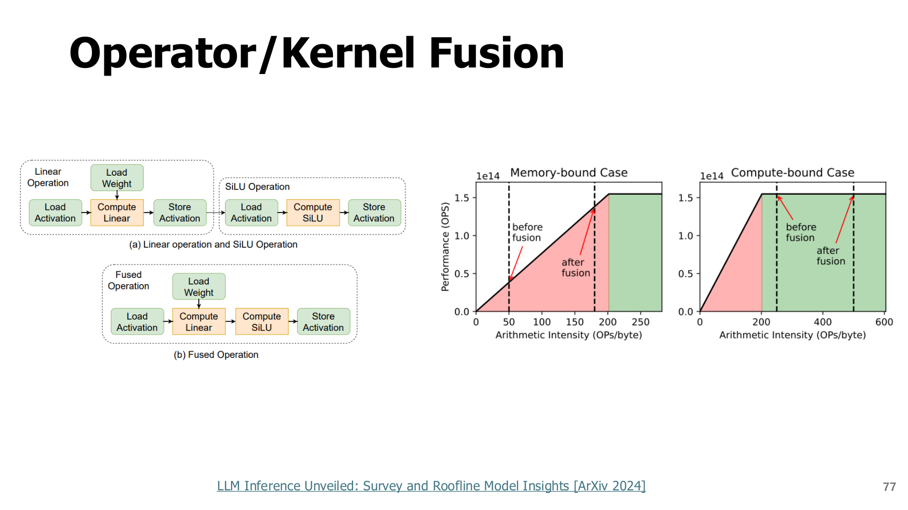
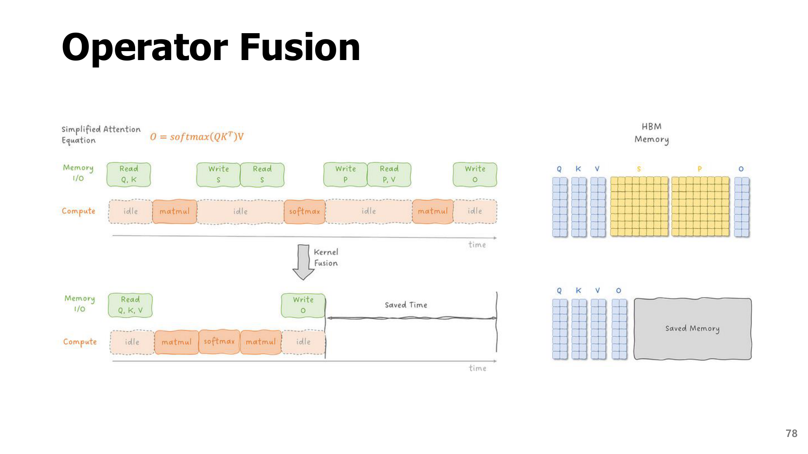
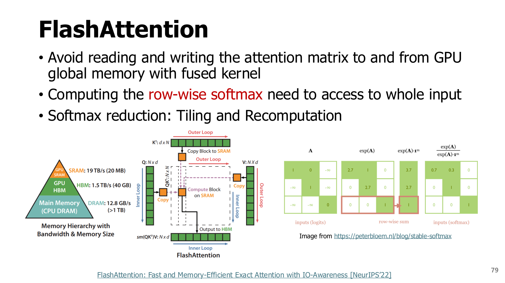
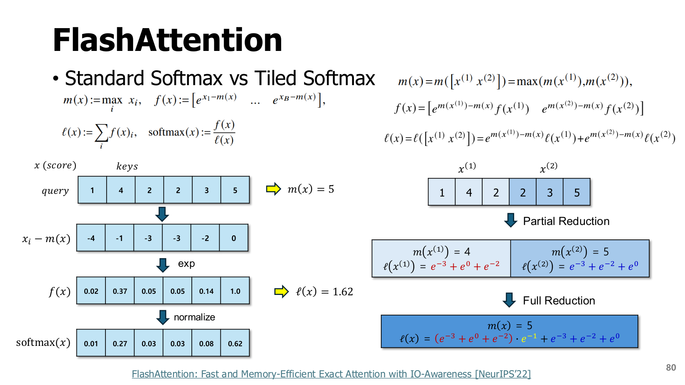
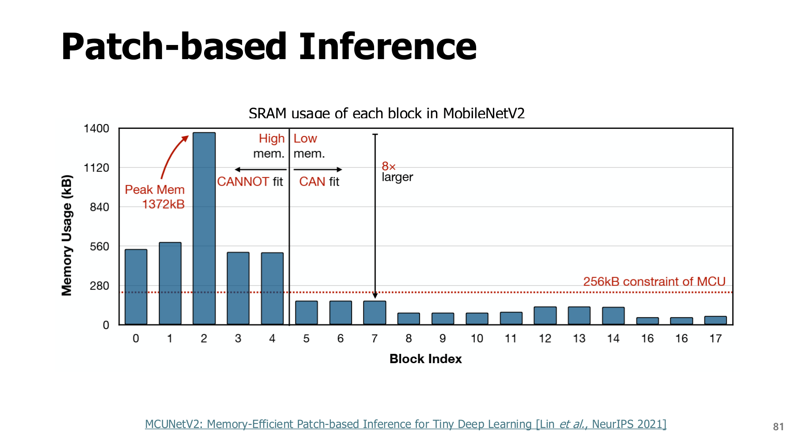
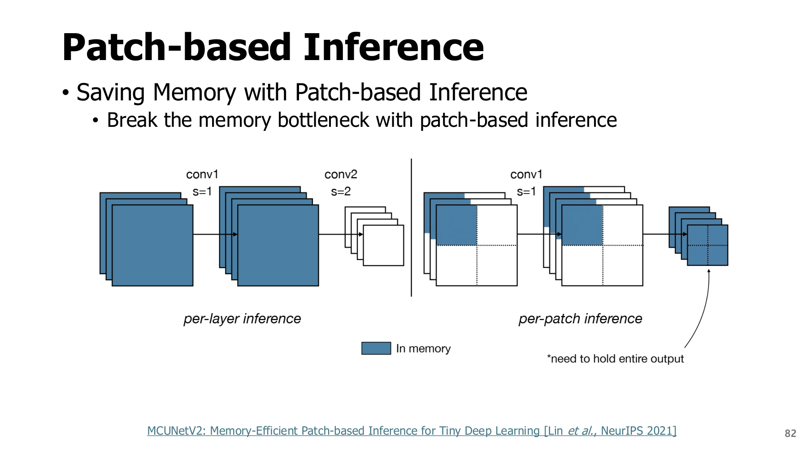
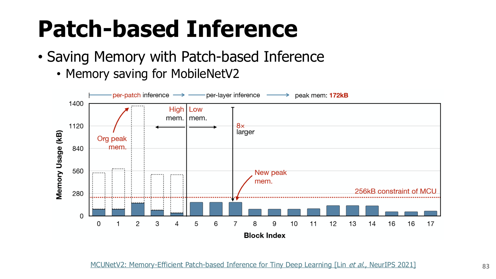
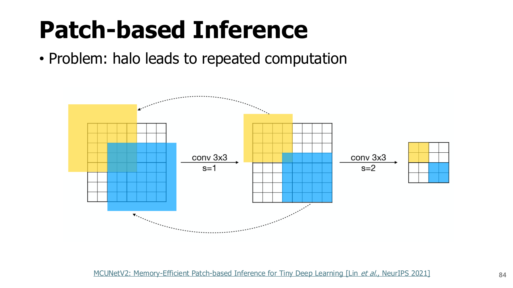

7. 하드웨어 실행 최적화: 같은 계산을 덜 이동하며 수행하기
원본 범위: p.76-84
학습 목표
- 연산량 감소와 데이터 이동 감소 구분하기
- Fusion·FlashAttention·patch 실행의 메모리 절감 대상 설명하기
- 타일 softmax와 경계 중복 계산을 작은 예제로 확인하기
시작 전 준비: 계산과 메모리는 다른 자원이다
계산기가 빨라도 숫자를 가져오는 시간이 길면 기다려야 한다. 장치의 속도는 연산 성능뿐 아니라 데이터 이동에도 좌우된다.
| 용어 | 뜻 |
|---|---|
| Tensor | 벡터·행렬 등을 포함한 다차원 숫자 배열 |
| 연산 그래프 | 계산과 데이터 연결을 나타낸 구조 |
| HBM·전역 메모리 | GPU에서 비교적 큰 데이터를 보관하는 메모리 |
| SRAM·register | 계산 장치 가까이의 작고 빠른 저장 공간 |
| 메모리 대역폭 | 일정 시간에 이동할 수 있는 데이터의 양 |
| Memory-bound | 데이터 이동 때문에 성능이 제한되는 상태 |
| Compute-bound | 산술 연산 처리 능력 때문에 성능이 제한되는 상태 |
| Peak 메모리 | 실행 도중 가장 많이 동시에 사용한 메모리 |
비유: 큰 창고와 작은 작업대를 떠올리면 된다. 작업대는 빠르게 사용할 수 있지만 모든 물건을 한꺼번에 올려둘 수는 없다.
7.1 Compiler 최적화는 무엇을 바꾸는가? - p.76
**Compiler(컴파일러)**는 모델의 연산 그래프를 실행 가능한 장치별 연산으로 변환하고 최적화한다. 원문 p.76의 여러 그림은 그래프 단순화, constant folding, 메모리 계획, 중복 연산 제거 등 서로 다른 최적화 영역을 모아 보여준다.
| 최적화 | 교육용 예 | 기대 이득과 주의 |
|---|---|---|
| 상수 접기 | 실행 중 변하지 않는 상수 표현 미리 계산 | 입력·상태에 의존하면 상수가 아님 |
| 공통 부분 제거 | 같은 입력의 같은 순수 연산 결과 재사용 | random·상태 변화 연산에 무조건 적용 불가 |
| layout·연산 선택 | 장치가 잘 처리하는 배열 순서·커널 선택 | 변환 비용이 이득을 상쇄할 수 있음 |
| 메모리 계획 | 수명 끝난 tensor 공간 재사용 | 동시에 필요한 값을 덮어쓰면 안 됨 |
| fusion | 여러 연산을 한 kernel에서 처리 | 지원 패턴·수치·자원 제약 |
이들은 원칙적으로 모델의 수학적 의미를 보존하도록 설계하지만, 부동소수점 연산 순서 변경으로 bit 단위 결과는 달라질 수 있다. 그래프가 최적화되었다는 보고와 실제 장치의 지연시간·메모리 개선은 별도로 확인한다.
7.2 Operator/kernel fusion - p.77-78
**Operator(연산자)**는 그래프의 수학적 작업, **kernel(커널)**은 장치에서 실행하는 코드 단위다. fusion은 여러 연산을 묶어 중간 tensor의 전역 메모리 저장·재로드와 kernel launch 비용을 줄이는 방법이다.


그림 읽기
- 왼쪽: 따로 실행하던 연산을 한 커널로 묶는 경로.
- 오른쪽: 데이터 이동과 산술 연산 중 무엇이 병목인지에 따른 효과 차이.
작은 예제: $y=ReLU(x+b)$에서 $ReLU(a)=max(0,a)$다.
| 별도 실행 | 결합 실행 |
|---|---|
| x 읽기 → 더하기 → 중간값 쓰기 | x 읽기 → 더하기·ReLU → y 쓰기 |
| 중간값 다시 읽기 → ReLU → y 쓰기 | 중간값은 가까운 register 등에 유지 |
가중치를 사용하는 선형 연산은 가중치 접근 비용도 추가로 고려해야 한다.
교육용 계산: 중간값 왕복을 없애면?
| 조건·계산 | 값 |
|---|---|
| 중간 tensor의 원소 수 | N개 |
| Float32 원소 1개 | 4 byte |
| 쓰기 1번 + 읽기 1번 생략 | $2\times N\times4=8N$ byte 절감 |
| N=1,000,000 | 8,000,000 byte = 8 MB |
이상적인 전송량 계산이며 시간 절감의 실측값은 아니다. 유효 대역폭, 다른 계산과의 겹침, register 사용 증가에 따른 병렬 실행 여유 감소 등을 함께 확인한다.


그림 읽기
- 위: 각 연산 사이에서 HBM으로 값을 쓰고 다시 읽는 경로.
- 아래: fused kernel 안에서 연산을 이어 처리하는 경로.
- 오른쪽 중간 행렬: 전역 메모리에 따로 저장할 필요가 줄어드는 값.
- 핵심 질문: 연산 수가 비슷한데도 빨라질 수 있는 이유는 무엇인가?
Fusion은 중간값 이동과 실행 호출 비용을 줄일 수 있다. 자원 요구가 커져 느려지는 경우도 있으므로 실제 시간을 측정한다.
7.3 FlashAttention은 attention을 생략하는가? - p.79
큰 중간 행렬이 만드는 비용
| 중간값 | 역할 | 전체 길이가 L일 때 |
|---|---|---|
| S | query-key 관련성 점수 | 대략 $L\times L$ |
| P | softmax 후 비중 | 대략 $L\times L$ |
| O | value의 가중합 | 최종 attention 출력 |
S와 P 전체를 HBM에 저장하고 읽으면 이동량이 크다. SRAM은 가깝고 빠르지만 이 큰 행렬을 통째로 두기에는 작다.
FlashAttention의 실행 순서
- Q·K·V의 일부를 작은 **타일(tile)**로 읽는다.
- 해당 타일의 점수와 softmax 통계를 계산한다.
- 지금까지의 통계·출력 누적값과 합친다.
- 다음 타일로 진행한다.


그림 읽기
- 왼쪽: 작은 고속 메모리와 큰 전역 메모리의 차이.
- 가운데·오른쪽: 타일을 읽고 attention 출력에 누적하는 경로.
- 볼 점: 전체 score·확률 행렬을 HBM에 한꺼번에 저장하는 과정을 피한다.
기본형의 성격: 같은 dense attention을 다른 계산 순서로 구한다. 연결을 삭제하는 sparse attention과 다르며, 실수 연산 관점에서는 같은 결과를 목표로 한다. 부동소수점 연산 순서에 따른 작은 차이는 가능하다.
계산량과 메모리 이동량 구분
- 기본 FlashAttention의 dense 연산량은 길이 L에 대해 여전히 대체로 2차로 증가한다.
- 줄이는 핵심 비용은 큰 중간 행렬의 저장·이동이다.
- 학습의 backward(역전파)에서는 일부 값을 재계산해 저장량을 줄일 수도 있다.
재계산이 추가돼도 비싼 메모리 왕복을 더 많이 줄이면 전체 실행이 유리할 수 있다. 원리와 조건은 FlashAttention 원 논문을 참고한다.
7.4 타일별 softmax를 정확히 병합하기 - p.80
왜 타일별 확률을 그냥 이어 붙일 수 없을까?
두 타일을 각각 softmax하면 각 타일의 확률 합은 1이다. 이를 붙이면 합이 2가 되어 전체 확률분포가 아니다.
필요한 작업: 각 타일의 통계를 같은 최대값·같은 분모 기준으로 바꿔 합친다.
심화 식: 최대값과 지수합 병합
| 기호 | 뜻 |
|---|---|
| $x_i$ | i번째 관련성 점수 |
| $m=\max_i x_i$ | 전체 최대 점수 |
| $l=\sum_i e^{x_i-m}$ | 최대값을 뺀 지수값의 전체 합 |
| $softmax(x)_i=e^{x_i-m}/l$ | 해당 점수의 최종 확률 |
최대값을 빼면 지수 계산의 overflow를 줄인다. 두 타일 a·b의 통계를 합치는 식은 다음과 같다.
두 타일의 통계는 위 식으로 병합한다. 각 타일의 softmax를 따로 정규화해 이어 붙이는 것은 틀리다. 전체 분모와 최대값을 공유해야 한다.


원문 입력 $x=[1,4,2,2,3,5]$를 [1,4,2], [2,3,5]로 나눠 계산한다.
| 단계 | 값 |
|---|---|
| 첫 타일 | $m_a=4$, $l_a=e^{-3}+1+e^{-2}\approx1.185122$ |
| 둘째 타일 | $m_b=5$, $l_b=e^{-3}+e^{-2}+1\approx1.185122$ |
| 전체 최대 | $m=5$ |
| 첫 타일 보정 | $e^{-1}l_a\approx0.435982$ |
| 전체 지수합 | $l\approx0.435982+1.185122=1.621105$ |
계산 결과와 원문 정정
전체 softmax ≈ [0.011298, 0.226931, 0.030712,
0.030712, 0.083483, 0.616863]
- 그림의 두 번째 확률
0.27은 주어진 입력과 맞지 않는다. - 올바른 계산: $e^{-1}/1.621105\approx0.226931$.
- 소수 둘째 자리로 반올림: 0.23.
원문 이미지는 보존하고 본문에서 정정한다. 이미지 숫자를 그대로 답으로 사용하지 않는다.
출력 O까지 구하려면?
Softmax 통계뿐 아니라 value의 가중합도 누적해야 한다.
- $v_i$: 해당 위치의 value.
- $u_a,u_b$: 각 타일에서 아직 전체 분모로 나누지 않은 가중합.
- 보정 계수: 지수합과 출력 누적값에 같은 최대값 기준 변경을 적용한다.
교육용 Python 3 코드: 표준 라이브러리만으로 전체 softmax와 타일 병합이 일치하는지 확인한다. 실제 FlashAttention kernel 구현이나 속도 시험은 아니다. 값이 모두 유한한 비어 있지 않은 입력을 가정하며, 전부 masked된 행은 별도 처리가 필요하다.
import math
x = [1, 4, 2, 2, 3, 5]
a, b = x[:3], x[3:]
ma, mb = max(a), max(b)
la = sum(math.exp(v - ma) for v in a)
lb = sum(math.exp(v - mb) for v in b)
m = max(ma, mb)
denom = math.exp(ma - m) * la + math.exp(mb - m) * lb
tiled = [math.exp(v - m) / denom for v in x]
direct_denom = sum(math.exp(v - max(x)) for v in x)
direct = [math.exp(v - max(x)) / direct_denom for v in x]
assert all(abs(u - v) < 1e-12 for u, v in zip(tiled, direct))
assert abs(sum(tiled) - 1) < 1e-12
print([round(v, 6) for v in tiled])
7.5 Patch-based inference와 halo - p.81-84
모델은 저장되는데 왜 실행 중 메모리가 부족할까?
가중치 외에도 중간 활성값을 보관해야 하기 때문이다. 초기 층의 공간 크기가 크면 feature map이 메모리의 큰 부분을 차지할 수 있다.


그림 읽기
- 가로축: 신경망 블록 번호.
- 세로축: SRAM 사용량.
- 수평선: 원문 예제의 MCU 메모리 한계. MCU는 작은 임베디드 제어 장치다.
- 볼 점: 초반 블록의 큰 중간값이 한계를 넘고, 뒤쪽 블록은 상대적으로 작다.
Patch-based inference: 공간을 작은 patch로 나누어 여러 층을 진행한 뒤 다음 영역으로 이동한다. 동시에 보관하는 중간값 범위를 줄이는 전략이다.


그림 읽기
- 층별 실행: 한 층의 넓은 공간 출력을 보관하고 다음 층으로 이동.
- Patch별 실행: 작은 공간 영역을 여러 연산에 걸쳐 처리.
- 주의: 최종 출력·연결에 필요한 값은 보관해야 하므로 메모리가 단순히 patch 개수의 역수로 줄지는 않는다.


그림 읽기
- 원래 peak와 변경 후 peak를 구분한다.
- 초기 블록의 메모리를 줄인 뒤 최대값의 위치가 바뀔 수 있음을 확인한다.
- 원문 MobileNetV2의 실행 계획에 대한 결과다. 다른 모델의 감소율을 보장하지 않는다.
합성곱은 주변 입력을 함께 참조한다. Halo는 patch 경계의 출력을 계산하기 위해 추가로 읽는 인접 영역이다. patch마다 halo를 다시 처리하면 중복 계산이 생긴다.


그림의 겹치는 색 영역은 경계를 넘는 의존성을 나타낸다. 경계에서 임의의 0을 채우면 원래 전체 이미지의 내부 위치와 다른 출력을 만들 수 있다. 원래 padding은 전체 이미지 외곽 조건이며 patch 내부 경계에 무조건 적용하는 규칙이 아니다.
교육용 1차원 예제: 겹치는 입력 세기
조건: 한 출력에 인접 입력 3개를 쓰는 합성곱, stride=1, dilation=1, padding 없는 valid 방식.
전체 입력: a b c d e f
첫 출력 patch: a b c d → 출력 2개
둘째 출력 patch: c d e f → 출력 2개
중복 영역: c d
| 실행 | 읽는 입력 개수 |
|---|---|
| 출력 4개를 한 번에 계산 | 6개 |
| 출력 2개씩 두 patch로 계산 | $4+4=8$개 |
| 겹쳐 읽는 부분 | 가운데 2개 |
Stride는 필터를 옮기는 간격, dilation은 필터 원소 사이의 간격이다. 2차원·다층에서는 한 출력이 의존하는 입력 범위인 **receptive field(수용영역)**가 커져 겹침이 늘 수 있다.
Patch 크기의 절충
| 작게 나눌 때의 이점 | 함께 늘 수 있는 비용 |
|---|---|
| 동시에 보관할 activation 감소 | Halo의 상대 비중·중복 계산 증가 |
Kernel 크기·stride·dilation, 층 경계, skip 연결, 최종 출력 조립을 포함해 실행 계획을 정한다. 여기서 kernel은 합성곱 필터의 크기를 뜻하며, 실행 코드 단위를 뜻하는 앞 절의 커널과 문맥이 다르다.
7.6 요약과 확인 질문
| 방법 | 주로 줄이는 비용 |
|---|---|
| Fusion | 중간값 왕복·커널 실행 호출 |
| FlashAttention | 큰 attention 중간 행렬의 저장·이동 |
| Patch 실행 | 동시에 보관하는 공간 범위의 활성값 |
각 방법의 대상이 다르므로 먼저 어떤 자원이 병목인지 확인한다.
- 각 타일 softmax를 따로 계산해 이어 붙이면 합은 얼마가 되는가? 왜 잘못인가?
- 위 첫 타일의 최대값 4를 전체 최대 5로 바꿀 때 지수합에 무엇을 곱하는가?
- FlashAttention은 모든 긴 context attention을 선형 연산량으로 바꾸는가?
- patch를 작게 하면 메모리와 중복 계산은 각각 어떻게 바뀔 수 있는가?
해설과 돌아갈 위치
- 두 타일이 각각 1로 정규화되어 합이 2다. 전체 벡터의 분모를 공유해야 한다. 7.4로 돌아간다.
- $e^{4-5}=e^{-1}$을 곱한다. 다른 최대값 기준으로 구한 지수합을 같은 기준으로 바꾸는 과정이다.
- 아니다. 기본형은 dense exact attention의 IO를 줄이는 알고리즘이다. 연산량 감소를 위한 희소 attention과 구별한다. 7.3을 확인한다.
- peak activation을 줄일 여지가 있지만 경계 halo의 상대 비중·중복 연산이 커질 수 있다. 7.5 예제를 확인한다.